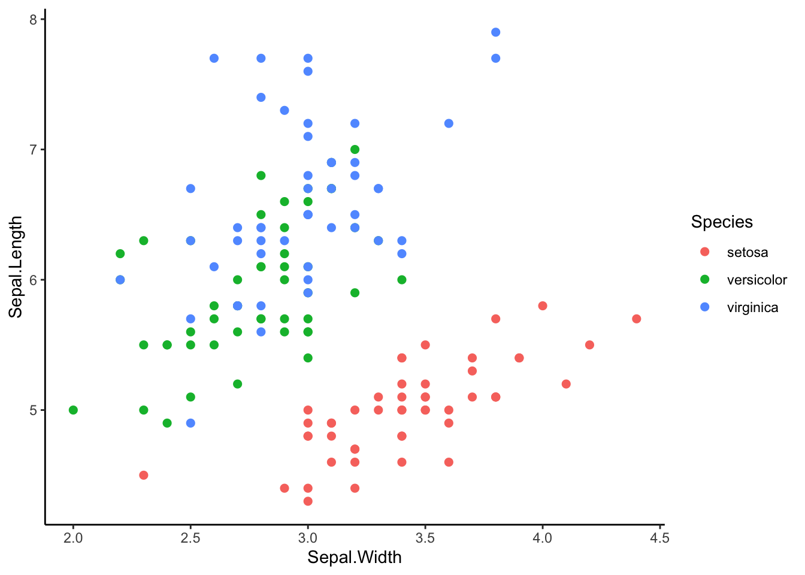
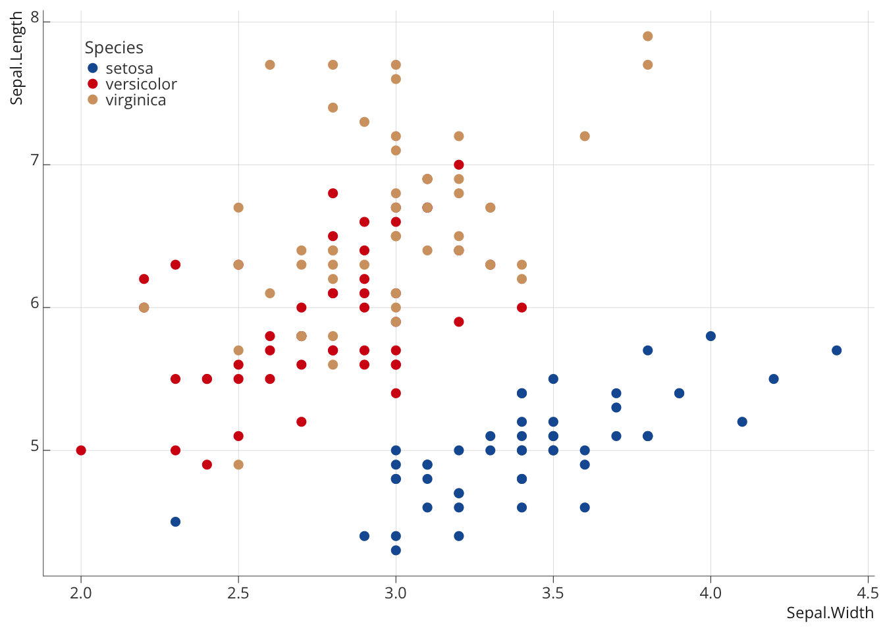

Charte graphique
L’utilisation de R permet l’intégration directe de la charte graphique de l’OFCE directement dans la rédaction du code, que ce soit pour la production de graphiques, ou celle de tables. Cela passe par la définition d’un thème qui en reprends les différents élements et qui est ensuite associé à l’objet ggplot2 ou gt.
Pour les graphiques (ggplot2)
Un graphique ggplot2 par défaut aura le rendu suivant:
L’ajout de la commande theme_{nomdutheme} permet d’appliquer un thème spécifique au graphe produit (ici theme_classic). Plusieurs sont déjà pré-enregistrés dans ggplot2.

Un thème spécifique à l’OFCE existe dans le package ofce et permet d’appliquer des modifications de forme qui reprenne les élements de la charte graphique définie par ailleurs.

Palettes de couleur
Il est également possible de spécifier manuellement les couleurs dans un graphe à l’aide de la commande scale_XXX_manual 1, en y associant un vecteur de couleur.

Palettes de couleur OFCE
Les palettes de couleur OFCE peuvent être directement chargées depuis le package à l’aide de la commande load. Trois palettes sont actuellements enregistrées:
-
palette_pays: couleurs associées à une sélection large de pays (pour certains deux couleurs sont possibles, le choix résultant de son accord avec les autres) -
palette_principale: couleurs principales utilisées à l’OFCE -
palette_degrades: Palettes réduites pour des degradés autour de certaines couleurs (entre 3 et 6 couleurs)
Elles sont également intégrées à des fonctions du package ofce qui permettent d’avoir un vecteur de couleurs directement en fonction d’un nombre pour ofce_palette et d’un vecteur de code iso3 pour les pays pour ofce_palette_pays.

Les références de code couleurs peuvent être consultés dans les documents suivants:
Pour les pays
Pour les palettes principales
x